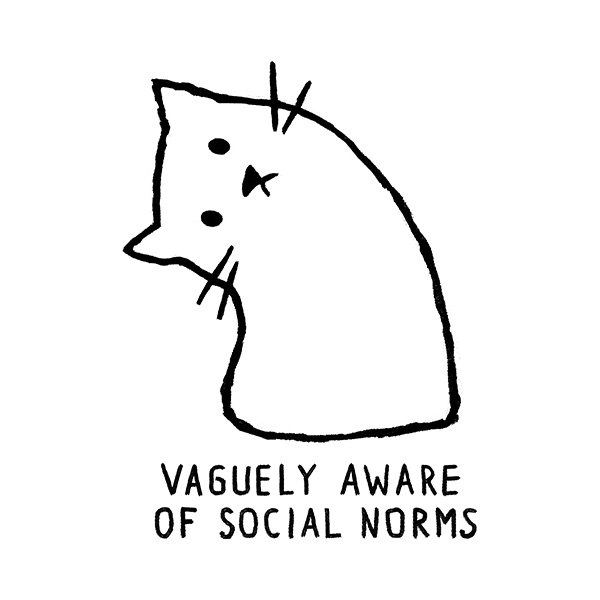

Vaguely Aware of Social Norms

Before the pandemic there used to be parties and gatherings. It’s not like I miss them because I didn’t really use to go to that many. I like spending time alone, in my apartment, working on things and drawing. So I didn’t go out often, but every now and then I went to meet my friends. Sometimes, if there were a lot of people or loud music, I would get tired of the noise and the talking. I can’t count the number of times that someone asked me if I was feeling alright or “why are you sitting alone and did something happen, you seem sad”.
It often seemed to me that others are better in social situations, more cheerful, know what to say, how to behave, they can talk with others for hours, and not get tired. That is, sort of, what inspired my design “Vaguely Aware of Social Norms”.
I must not be the only one feeling this way because when I posted this design on Threadless, people loved it. I like drawing something personal and then finding out that it’s relatable for others too.